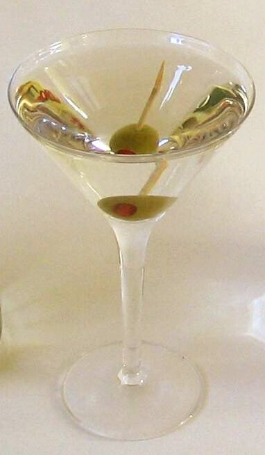
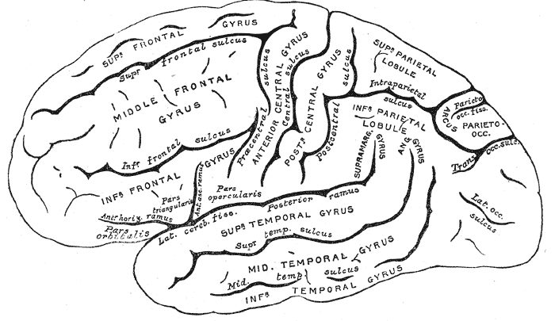

读之前
这一页是报告 16 的中段：8 月 11 日到 9 月 21 日，八条。第一条最长，占全页七成，写的是 Nemur 太太办的一场鸡尾酒会：查理卡在研究上，想让脑子歇一歇才去的。后面七条都短，有的只有几行，其中一条是一封信的抄本。读的时候抓两条线：一条是查理和 Nemur、和满屋子体面人之间憋了很久的话；一条是他手上那道题，7 月底他觉得答案就在眼前。
手术后五个多月，智力远远超过身边的人。7 月中他去看了 Warren 州立之家：按当初说好的安排，实验失败了他就会被送去那里。Algernon 在退化，不肯走迷宫，要人硬喂，走错路就撞墙、缩成一团。他在实验室搭了行军床，没日没夜地算。Fay 有了新男友；Alice 常来送吃的，担心他喝酒。他觉得旧查理一直在一旁等着。
读的时候带着这几个问题。不用先找答案，读完回来对照「检查一下理解」。
酒会上，Nemur 太太、Raynor 先生、Raynor 太太各怎么看查理？他们各想从这个项目里得到什么？§1
Strauss 对基金会的人讲了一番经费和「阴性结果」的道理。查理当时没插上话；留意这番话在这一页里有没有再出现。§1 §3
这一晚查理「看自己」的位置变了好几次：他从哪里看，看见的是谁？§1
后面几条短报告，留意他的口气：写给谁，在安慰谁，怕的是什么。§3–§8
分节地图
这一页有八条带日期的报告。读完一条打个勾；每条下面的英文是那一条开头的几个词，在 Kindle 里搜它就能跳过去。没读的那几行先模糊着，免得提前看到情节，点一下就能看清。全页约 4600 词，一次读完。
8 月 11 日约 3200 词 Blind alley for the past two … 昨晚的酒会。留意谁替谁说话，和夜深时查理看自己的角度。 上午 4:30约 100 词 The solution came to me, just … 只有几句。留意最后那个问句。 8 月 26 日约 400 词 LETTER TO PROFESSOR NEMUR (COPY) … 一封信的抄本。留意写给谁、抄送给谁，信里引了谁说过的话。 9 月 1 日约 200 词 I must not panic. Soon there … 留意他打算怎样写往后的报告，和 Alice 的反应。 9 月 2 日约 200 词 Nothing definite yet. I move in … 一个梦，一段声明。留意梦里的影子。 9 月 15 日约 100 词 Nemur says my results have been … 两段。留意他给后来的研究者指的方向。 9 月 17 日约 200 词 Becoming absent minded. Put things away … 留意开头几句没有主语的短句。 9 月 21 日约 100 词 I’m going to Marks Street to … 他决定去一个地方。留意他对自己提的要求。
背景：书里默认你知道的事
按在书里出现的顺序排，标题前是节号。人名后面括号里是中译本的译名，读者想对照译本时用。
§1 鸡尾酒会和马丁尼鸡尾酒会（cocktail party）是 1950–60 年代美国中产和学术圈常见的应酬：傍晚到晚上，客人端着酒站着或三五成堆地聊，主人领着重要的客人挨个引见。这一场是为两位 Welberg 基金会董事办的，他们帮 Nemur 拿到了经费，所以这不是闲聚，是答谢和拉关系。这一条里查理端着的马丁尼（martini）是杜松子酒（gin）兑一点干味美思（vermouth），几乎全是烈酒。

一杯加橄榄的杜松子酒马丁尼。现代的照片，和书无关，放在这里是因为它是查理那一晚喝的酒。Hayford Peirce（据 Dry_Martini.jpg 改），公有领域，维基共享资源 §1 酒会上的人主人和贵客里有几位是这一条才出场的。下面的卡片只写你此刻已经知道的，或者这一条开头就交代了的。
Bertha Nemur 伯莎·尼姆 Nemur 的妻子，酒会的女主人。报告 13 里 Burt 说，Nemur 的教授职位是她弄来的，Welberg 的经费是她借父亲的影响争取的。
Hyram Harvey 海勒姆·哈维 Welberg 基金会的董事，上了年纪。这一条才出场。
George Raynor 夫妇 乔治·雷纳 另一位基金会董事和他的妻子。查理形容她三十岁上下，黑发，很漂亮。这一条才出场。
Professor Nemur 尼姆教授 实验的主持人。报告 15 里查理拿到独立研究的资格，他很冷淡。
Dr. Strauss 斯特劳斯医生 做手术的神经外科医生，也给查理做谈话治疗。
Burt Selden 伯特 做测验、照看 Algernon 的研究生。
§1 纯研究和看得见的好处Strauss 和 Raynor 争的是一个老问题：出钱的人想看到能用的成果，做研究的人说事先谁也不知道哪项研究会有用。二战以后美国开始大笔资助基础研究：1945 年 Vannevar Bush 给总统的报告《科学：无尽的前沿》主张由联邦政府出钱支持基础研究，1950 年国会通过法案成立了国家科学基金会（NSF）。Strauss 抱怨的是另一头：钱指定了用途（earmarked），附带了条件（strings）。读的时候看两边各要什么。
§1 「另一个查理」和解离心理学说的解离（dissociation），是一个人的意识、记忆、身份感或对自己的感知彼此脱了节，轻的像出神，重一些的会觉得自己站在一旁看着自己。它常被笼统地叫成「人格分裂」，也常和精神分裂症混为一谈，其实是几回事。查理这种「从旁边看自己」的经验前面已经出现过几次：报告 11 公园里树后的男孩，报告 14 站在门口看自己和 Fay，窗外那张脸。
§3 研究报告、信和「统计上显著」研究者把论文寄给同行，常附一封短信：论文另外寄（under separate cover），信末写 encl.（附件）和 copy（抄送给谁）。统计上显著（statistically significant）是统计学的说法：按某个事先定的标准（心理学常用 5%），这样的结果不太可能只是碰巧。它说的是「不像偶然」，不是「很重要」，也不是「一定对」。
§7 脑回和脑沟人的大脑皮层表面皱成一道道褶：鼓起来的叫脑回（gyrus，旧书里常说 convolution），陷下去的缝叫脑沟（sulcus），特别深的大沟叫裂（fissure）。皱起来，同样大小的颅腔里就能装下更多皮层。不是所有动物的大脑都这样：小鼠、大鼠这些小型啮齿动物的大脑皮层天生就几乎是光滑的，猕猴、猪和人的才有明显的褶。

人的左侧大脑半球，从侧面看。大写 GYRUS 标的是脑回，小写 sulcus 标的是脑沟。Henry Vandyke Carter，公有领域，维基共享资源
脑回：鼓起的褶
脑沟：陷进去的缝
人的大脑皮层（剖面）
表面基本光滑
小鼠的大脑皮层（剖面）
皱起来，同样大的颅腔
就能装下更多皮层
本站示意图：只画形状，不按比例。小鼠的脑比人的小得多。 词与短语
三类：紫边的「查理拼的」是他拼错的词，先写还原的拼法；黄边的「每个字都认识」是熟词生义、俚语、别人话里的弦外之音；其余是这里用法特别的词。斜体小字是原句里的几个词，在 Kindle 里搜它就能找到原文，拼错的照拼错的抄。这一页查理没有拼错的字。
§1 8 月 11 日
blind alley
… Blind alley for the past two …
死胡同
迷宫里走不通的死路也叫 blind alley。同一句里的 taken a wrong turn（拐错了弯）也是走迷宫的说法。报告 16 前半 7 月 28 日写 Algernon 走迷宫，dead-end、blind alley、cul-de-sac 都用上了。查理拿迷宫的词说自己的研究，这是本站的读法。
let it stew
… for a while and let it stew.
先搁着，让它慢慢炖
stew 是文火慢炖。意思是不去硬想，交给意识底下的部分去琢磨。
bring to bear on
… experienced is brought to bear on the …
（把力量、知识）调动起来用在……上
bear 在这里不是「熊」也不是「忍受」，是「施加」。
be instrumental in
… had been instrumental in getting her husband …
在……上起了关键作用
instrumental 常见的意思是「器乐的」。这里说两位董事帮 Nemur 拿到了经费。
get through to
… I have trouble getting through to people.
和人说得通，让人听进去
不是「穿过」。打电话「接通」也说 get through to。
knots of people
… There were little knots of people …
一小堆一小堆的人
knot 本义是绳结，这里是聚在一起的一小群。
corner
… Finally, Mrs. Nemur cornered me and …
把人堵住（拉住说话）
动词，「把人逼到角落」。查理没有地方躲。
pitch in
… decided to pitch in and help out.
出一份力，帮把手
口语。Nemur 太太的话说得客气，意思是：你是来帮忙的，这项目是别人的。
all right（加强语气）
… She was sharp, all right. She …
确实，一点不假
放在句末的 all right 是加强语气：「她可真够厉害的」，不是「没关系」。译本：「她的言词很犀利，没关系」。把加强语气的 all right 读成了「没关系」。
have the credit coming
… her husband had the credit coming.
功劳该归他
have something coming 是「某样东西是你应得的」，好坏都能用。
toss it back
… resist tossing it back at her.
回敬回去
像把扔过来的球扔回去。
not in any position to
… you weren’t in any position to do …
那时没这个条件、没这个能力
字面是「不在那个位置上」。她当着基金会董事的面说，那时候查理还做不了心理实验：意思是手术前他是个智障者。话说得轻巧，刺得很准。
get the last word in
… let me get the last word in, …
说最后一句（在嘴上占上风）
吵嘴时谁说最后一句，谁就算赢。
strings tied to the money
… without having strings tied to the money.
钱上附带的条件
常说 no strings attached（不附带条件）。Strauss 的话，见「背景」。
earmark
… When amounts are earmarked for specific purposes, …
（款项）指定专门用途
本义是在牲口耳朵上打记号，后来指把钱划定给某件事用。
pick up from there
… is going to pick up from there.
从那里接着做下去
Strauss 说，阴性结果对「后来接手的人」一样重要。这番话留个记号。
retardate
… these techniques on other retardates? Is …
智障者（当时的用词）
当时的书面说法，今天不这样称呼人了。说话的是 Raynor 太太。
pure research
… necessity for pure research in fields …
纯研究（不问用途的研究）
原文 pure 是斜体，Raynor 先生特意加重：先说一句「我们都理解」，接着就是 But。
a boon to our image
… such a boon to our image if …
对我们的形象大有好处
boon 是「好处、恩惠」。基金会关心的是形象。
cut someone to pieces
… ready to cut them to pieces.
（用话）把人批得体无完肤
这里说的是嘴上的刀子。Strauss 看出来了，先把他拉走。
help oneself to
… helping myself to another martini.
自己去拿（吃的、喝的）
不是「帮助自己」。这一条里写到他去拿酒的有好几处，留意 another 出现了几次。
goose
… I’m going to goose her if …
（轻佻地）戳人屁股
动词，美国俚语，不是「鹅」。同一句的 fanny 是「屁股」，报告 9 的页面收过。查理这时已经喝多了。
the haze was coming over me
… The haze was coming over me, …
醉意涌上来，眼前发雾
haze 是雾气、薄霾，也指脑子里糊成一片。
guinea pig
… Since when is a guinea pig supposed …
实验品
本义是豚鼠，报告 13 的页面收过。这回他是冲着 Nemur 喊出来的。
have it out
… it’s time we had this out.
把话摊开来吵个明白
have it out with someone，当面把积怨说清楚。说这话的是 Nemur，他拦住了要劝架的 Strauss。
reap the honors
… to reap the honors you seek.
坐收荣誉
reap 是收割庄稼。
the hitch is
… The hitch is that I’m a person.
麻烦在于
hitch 本义是挂钩、拴住，口语里是「障碍、意外的麻烦」。
lord and master
… makes you my lord and master.
主子，主宰者
固定搭配，现在多带讽刺或玩笑口吻。查理的意思：你要当造我的人，所以我得永远感恩。
dissociation
… A peculiar dissociation has taken place …
解离
见「背景」。Strauss 说是「最近一个月左右」的事。译本：「过去两个月左右，他经历了某种特殊的人格分裂」。原文是 the past month or so，一个月左右；dissociation 是解离，比「人格分裂」宽，也不是一回事。
self-effacing
… The humble, self-effacing Charlie you were …
谦退的，不出头的
efface 是抹掉。把自己抹掉、往后缩的样子。
tempered by
… that hasn’t been tempered by human affection …
由……调和、缓和
temper 是给钢「回火」，让它不那么脆；也指调和、冲淡。
sermon
… and continued my sermon.
（自嘲）一通说教
本义是牧师的布道。查理自己这样叫他那番话。
neurosis, psychosis
… to neurosis, and possibly even psychosis.
神经症；精神病
当时精神医学的两大分法：neurosis 指焦虑、强迫这一类，人和现实的联系还在；psychosis 指和现实脱了节，如幻觉、妄想。
y’all
… Why y’all looking at me like …
you all 你们
不是拼错，是醉话。y’all 一般是美国南方人说的「你们」，查理是纽约人，这里是照醉后含糊的发音记了下来。同一句的 din’t 也是 didn’t 的醉音。译本：「你……你们为什么都这样看我？」。原文是吞音，译本换成了结巴，办法不同，醉态都在。
novocaine
… had been shot full of novocaine.
普鲁卡因（局部麻醉药）
Novocain 是普鲁卡因的商品名，1905 年前后由德国化学家 Alfred Einhorn 合成，牙医拔牙前常打。打了以后嘴唇脸颊发木，说话不利索。
with the flick of a switch
… almost with the flick of a switch, …
一拨开关似的，一下子
flick 是轻轻一拨。转换来得突然、彻底。
cave
… go back down into that cave.
洞穴
他对镜子说的话，紧挨着 my light、your darkness 两个说法。这本书卷首的题记引的是柏拉图《理想国》，讲的正是从暗处走进光里、从光里回到暗处。可以和题记对着读，这是本站的读法。
whirlpool in my eyes
… felt the whirlpool in my eyes.
眼里打转的漩涡
可以读成泪在眼眶里打转，也可以读成醉后天旋地转；书里没有说破。
§2 上午 4:30
Illuminated!
… dozing off. Illuminated! Everything fits together, …
豁然开朗！
单独一个词带感叹号：一下子照亮了。
§3 8 月 26 日
under separate cover
… Under separate cover I am sending …
另函寄上
书信套语，cover 指信封。信末的 encl（附件）和 copy（抄送），见「背景」。
see fit
… may be published if you see fit.
你认为合适的话
正式的说法，把决定权交给对方。
Algernon-Gordon Effect
… “The Algernon-Gordon Effect: A Study of …
阿尔吉侬—戈登效应
科学上常用发现者或病例的名字命名效应。查理用了两个实验对象的名字，Algernon 排在前面。
statistically significant
… predicted with statistically significant results …
统计上显著的
见「背景」。
take the liberty of
… I have taken the liberty of calling …
冒昧地，自作主张地
客气话，先替自己的擅自做主道个歉。
rest upon the ashes of
… must rest upon the ashes of the …
建在……的灰烬上
意思是自己的成绩是拿别人的心血烧掉换来的。
§4 9 月 1 日
burnout
… the first symptoms of the burnout.
燃尽，烧完
今天常说的「职业倦怠」那个意思，是 1970 年代以后才流行的，一般追溯到心理学家 Freudenberger 1974 年的文章。查理这里用的是字面：烧得太旺，烧尽了。译本：「油尽灯枯的初步征兆」。用了中文现成的成语，灯油烧干的意象正合 burnout 的字面。
Charlie-come-lately
… I’m just a Charlie-come-lately, and …
后来的、新冒出来的人
套的是 Johnny-come-lately（半路杀出来的新来者），把 Johnny 换成了自己的名字。同一段的 Hallston 大学是书里的，报告 10 的页面说过。译本：「刚冒出来的查理」。意思到了，套语的味道没了。
project the curve
… accurately projected the curve on the …
把曲线外推出去
用已有的数据点把曲线往后延，预测还没发生的事。
§5 9 月 2 日
undrape
… the shadow undrapes itself and stretches …
（像揭开的布一样）舒展开
drape 是垂挂的布，undrape 是揭开。少见的词，影子像一块布从脚边展开。
hang on to
… How much can I hang on to?
抓住不放，保住
这一条的最后一句。how much 问的是还能保住多少，不是还能撑多久。
§6 9 月 15 日
enzyme imbalance
… men studying enzyme imbalances. As with …
酶的失衡
身体里某种酶太多或太少，代谢就出问题。苯丙酮尿症就是一例，报告 13 的页面有说明。同一段的 administering hormonal substitutes 是「给补充激素」，administer 在这里是给药。
radioisotope
… for radioisotopes that may be used …
放射性同位素
当时医学上已用它来追踪物质在身体里的去向、做治疗。用它「局部控制皮层」是书里的设想。
§7 9 月 17 日
flare up
… lose my temper and flare up at …
冲人发火
flare 是火苗猛地一蹿。
waterfront
… wandering around down at the waterfront—on …
水边，码头一带
纽约是港口城市，曼哈顿两边沿河都是码头和仓库。
cerebral convolutions
… smoothing out of the cerebral convolutions …
大脑的脑回
见「背景」§7。convolution 本义是盘绕、卷曲。
fissure
… and broadening of brain fissures.
脑沟，脑裂
fissure 是裂缝。见「背景」§7。
§8 9 月 21 日
come to terms with
… to come to terms with her …
和……和解；接受（某人、某事）
不是「谈条件」。他要在见面之前先在心里放下。
查理的文字
拼写早就全对了，这一页「拼错」一直是 0。切到「长词」：8 月 26 日那封信，九个字母以上的词占 13.5%，是到这一页为止曲线上最高的一点，平均句长也到了 18.8 词。intensification、acceleration、applicability，这是查理在给教授写正式公文。同一页的酒会那一条只有 5.3%、平均 11.3 词，因为大半是对话。
醉的那一刻，文字也跟着醉：y’all、din’t 不是拼错，是他照醉话的音记下来的，曲线也没把它们算成拼错。9 月 17 日开头几句没有主语，Becoming absent minded. Put things away…，像随手记的便条。9 月 21 日那一条平均句长 21.4 词：第一段有一句四十多词，只有一个逗号，他说要赶在忘掉之前写下来，句子也像是一口气赶出来的。
值得停下来的句子
Who’s to say that my light is better than your darkness?— §1，8 月 11 日，酒会上的洗手间里，查理对着镜子里的查理说。本站译：谁又能断定，我的光亮胜过你的黑暗？
这是整页最软的一句，夹在最硬的几句中间：前面他说这身体、这头脑本来是对方的，后面他说「我不是你的朋友，我是你的敌人」。原文紧跟着还有一问，把「我的光明」换成了「死亡」：谁能说死亡就比你的黑暗好？光明和死亡被放在同一个位置上。译本：「谁能说我的光明就比你的黑暗美好呢？」。紧接着的那一问（死亡和黑暗）译本略掉了，直接接到「我有什么资格说」。
镜子是这条线索走到的最近处。前面几页，那个查理在树后、在窗外、在门口；这一回在正对面，隔着一面玻璃。下面这张图把这几次排在一起，是本站的读法。
5/17 报告 11 公园里，树后的男孩
6/5 报告 12 面包店的窗子变成镜子
6/10 报告 13 飞机窗外，云里的查理
6/23 报告 14 站在门口看着自己
6/25 报告 14 窗外贴着一张脸
8/11 这一页 餐厅门口；洗手台的镜子
远处、窗外 正对面
日期之间的距离不按比例
本站示意图：查理看见「另一个查理」的几次，按日期排。前五次在前面几页。 ARTIFICIALLY-INDUCED INTELLIGENCE DETERIORATES AT A RATE OF TIME DIRECTLY PROPORTIONAL TO THE QUANTITY OF THE INCREASE.— §3，8 月 26 日，给 Nemur 的信里，单独一行，全用大写。本站译：人为提高的智力会衰退，衰退的速度和提高的幅度成正比。
这是查理自己的研究得出的结论，也是对他自己的判决：他升得越高，掉得越快。信的口气平稳、客气，只在这一行全用大写，像论文里的定律。1959 年的中篇里也有这封信，但是写给 Strauss 的，这条定律写在第二天的报告里，没有大写；长篇把信改成写给 Nemur、抄送 Strauss 和基金会，把定律放进了信里。
读完想一想
1. 酒会上查理说，智力和学问要是没有人的感情来调和，就一文不值；还说他以前有很多朋友，现在一个也没有。你同意吗？他自己那一晚做到了吗？
本站的看法 那番话像是在说 Nemur，其实更像在说他自己，镜子以后他也承认了：Nemur 骂他傲慢、只顾自己，他走在回家路上觉得这话说中了。还有一处值得多想：他说「不像我在面包店时那样的朋友」，可报告 9 里他已经明白，面包店的人一直在笑他。他怀念的也许不是那些朋友，是那时候他觉得自己有朋友。
2. Nemur 说查理欠这些人的，至少该感恩；查理说实验品凭什么要感恩，又说其实他是感激的。他们争的到底是什么？
本站的看法 争的不是感不感恩，是查理手术前算不算一个人。查理说 Nemur 一再夸口实验前他什么也不是，在他听来，那样一来造出他的人就成了他的主人。查理要的是被当成人看，而且是一直都是人，手术前也是。这个问题报告 13 在大会上就埋下了。两个人那一晚都说了重话，谁也没占全理。
3. 9 月 2 日查理写：没有人该为发生的事受责备，实验准备周全，动物试验做得足，统计上验证过，心理上的陷阱没法预见。你同意他这样替大家开脱吗？
本站的看法 这是查理的宽厚，也有他想让 Alice 别内疚的意思。但书里另有线索：报告 15 里 Nemur 说，基金会早就和 Norma 说好，实验失败就送他去 Warren，费用由基金会出。失败的可能事先是想到了的。「没法预见」的也许只是心理上的那一层。同意手术的是 Norma，Nemur 自己说过查理当时没有能力同意。本站觉得，他的话可以当成他的选择，不必当成结论。
对照今天
成立 后来的事实印证了这个说法部分成立 一部分对，一部分被后来的事改了被改写 后来的事实推翻了它，或者完全变了样书里的说法：研究结果常常是阴性的，知道「此路不通」对后来的人和成功一样重要（Strauss 在酒会上说，§1；查理在 §3 的信里又提起）
书里 Strauss 对基金会的人说，事先谁也不知道研究会不会有用，结果常常是否定的，可知道什么不行，对接手的人和正面的发现一样重要。查理后来在信里说，他现在知道这话是对的。
当时 统计学家 Sterling 1959 年发表文章，指出不显著的结果往往不发表，文献里就会堆积碰巧显著的错误结论。他查了四种心理学期刊，报告主假设显著的论文约占 97%。
今天 这被叫作发表偏倚（publication bias），影响已经看得很清楚：2015 年一个大型协作组在 Science 上发表，重做了 100 项心理学研究，原研究 97% 结果显著，重做的只有 36% 显著。2013 年起，神经科学期刊 Cortex 带头推出「注册报告」：研究设计先过同行评审，通过了就不论结果正负都发表；到 2023 年 7 月约有 278 种期刊采用。道理已经公认，做到还差得远。核对于 2026-10。依据：Sterling（1959），Sterling 等人（1995），Open Science Collaboration 在 Science 的论文（2015），Chambers 在 Cortex 的社论（2013），2023 年关于注册报告采用情况的研究。
检查一下理解
先在心里答，再点开。答错的那题，回书里把对应那一条再读一遍。
1.（§1）Nemur 太太说查理「那时还做不了心理实验」，刺的是什么？ 当着基金会董事的面提醒大家：手术前查理是智障者，这个项目和功劳都是她丈夫的，查理只是来帮忙的。Harvey 跟着笑，查理决定闭嘴。
2.（§1）「从讨人喜欢的智障青年变成傲慢、只顾自己的混蛋」是谁说的？查理后来怎么看这句话？ 是 Nemur 当众说的。从洗手间出来、一个人走回家的路上，查理承认 Nemur 说中了：在镜子里他透过旧查理的眼睛看见了自己变成的样子，觉得羞耻。
3.（§1）Strauss 怎么解释查理说的「两个查理」？查理纠正了他哪一点？ Strauss 说这是近一个月左右出现的解离：查理几次觉得从前的自己是另一个人，还在他的意识里活动，像在争夺身体。查理说不是在争，只是在等；想起 Alice 那件事，他改口说「几乎从来没有」干涉过。
4.（§3）这封信写给谁、抄送给谁？报告是怎么寄的？ 写给 Nemur，抄送 Strauss 和 Welberg 基金会；报告另外寄，附录里有全部公式和数据分析，查理请他们核验，Nemur 觉得合适就可以发表。
5.（§7）Algernon 大约哪天死的？解剖看到了什么？ 9 月 17 日说是「两天前」，约 9 月 15 日；查理在码头一带转了一阵，凌晨 4:30 回到实验室时发现的。脑比正常的轻，脑回变平，脑沟变深变宽。不过小鼠的大脑本来就几乎没有褶，这段描写更像人脑。1959 年的中篇里只写了脑变轻，也只说把它装进奶酪盒埋了、哭了；不让人丢进焚化炉、放野花，是长篇加的。
6.（§4）Alice 听了消息哭着跑了出去。查理想让她明白什么？为什么？ 她没有理由为这件事内疚。报告 16 前半里说，Alice 一直觉得当初是她鼓励查理接受手术，自己有责任；9 月 2 日查理又写了一遍：谁都不该为此受责备。
用一句话说这一页：
精彩回顾
隔几周回来，先看这几张卡片。想不起来的那张，点节号回到这一页，再回书里那一条。
一句话： 酒会上查理骂醒了别人也照见了自己；几天后他找到了实验的缺陷，判决落在他自己身上。
实验品凭什么感恩 Nemur 当众问他还有没有一点感激。查理喊回去：我是个人，手术前也是。你看着我的时候，良心不安。
§1 镜子里的查理 醉后他站在门口看着另一个查理差点出丑，把他领进洗手间。镜子里那张脸张着嘴看他。他说：我不是你的朋友，是你的敌人。
§1 Fay 门里的笑声 半夜走回公寓，Fay 的灯亮着，正要敲门，听见她咯咯笑，还有一个男人的笑声。他在自己屋里摸黑站了很久。
§1 大写的一行 8 月 26 日给 Nemur 的信，口气平稳，只有一行全用大写：人为提高的智力会衰退，速度和提高的幅度成正比。
§3 后院的野花 Algernon 侧躺在笼子角落，像在睡梦里奔跑。查理把它装进小金属盒带回家，不让人扔进焚化炉，夜里埋在后院，放了一把野花，哭了。
§7 去 Marks Street 之前 一个梦勾起一串关于母亲的回忆。他决定明天去看她，先要在心里和她和解：我不能恨她。
§8